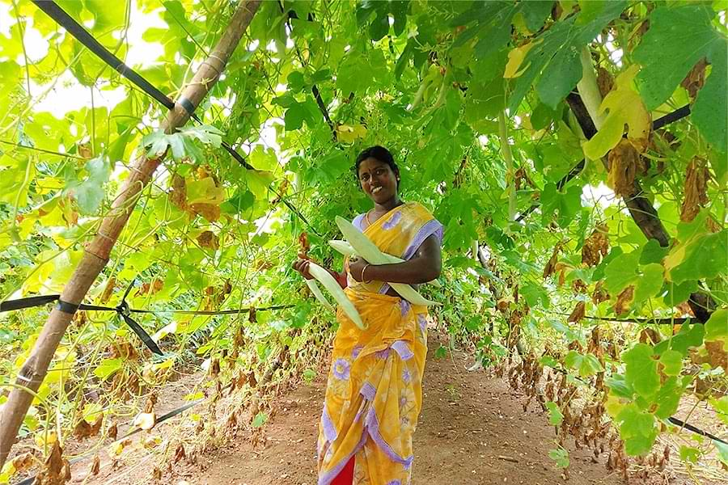

I. Improved Agronomy Practices
Drought resistant, short duration, pest and disease resistant varieties of black gram (CO 6, VBN 6, and VBN 8), green gram (VBN 3, CO 8), groundnut (TMV 13, CO 6 & Dharani), red gram (VBN 13, CO 7) and fodder crops (CO 30, K 8 & COFS 29) were demonstrated under the scheme in crop module. The main objective of the intervention is to study the drought resistant capability of new varieties, performance of intercropping system, yield potential, crop equivalent yield and economics of intercropping system under drought condition.
Groundnut cultivation in kharif season was mainly under rainfed condition whereas in rabi season cropping is under irrigated condition. The existing groundnut variety is TMV 7 (old and low yielding variety), sole cropping was the predominant cropping system followed in Vadavathur village. Plant population was also less (20 nos./m2) when compared to optimum plant population (33 nos./m2). Frequent occurrence of drought during the cropping period was also a major constraint in groundnut cultivation. Pod yield was 1500 kg/ha and haulm yield as 2800 kg/ha with B:C ratio of 2.3:1. The main technological intervention introduced was drought resistant semi spreading groundnut variety CO 6 inter cropping with short duration red gram CO (RG) 7 under rainfed condition. Both crops have same duration (120-125 days) and complementary interaction. 62 farmers in 24 ha in NICRA village and 13 farmers in 7 ha in adjoining village adopted this technology.
Black gram, green gram and red gram is major pulses crop cultivated in Vadavathur village with an average area of 30 ha in both kharif and rabi season whereas red gram cultivated in kharif season only. 128 farmers changed to this new variety of pulses in 63 ha.
II. Additional Crop Cultivation During Excess Rainfall

In NICRA village annual vegetable crops such as hybrid tomato, bitter gourd, ridged gourd, snake gourd, lab lab and annual moringa were cultivated in an area of 45 ha during rabi season by 167 farmers. Tomato farmers got a yield potential of 17.5 tons / 0.4 ha in 7 months. Whereas cucurbitaceous vegetable cultivated farmers fetched the yield of 1.7 tons in 50 cent area in 4 months. Farmers are directly selling their products in Uzhavarsanthai (Farmers Market) every day without middleman interference and getting appreciable income through additional cropping.
III. Crop Diversification with Perennial Crop
Before implementing NICRA, small onion was the major crop cultivated as annual crop in more than 300 ha and it is the only source of income. To alleviate this problem crop diversification with perennial crops was thought a feasible option to minimize risk in crop production, ensure reasonable returns with limited care for small land holders. Drought tolerant Jasmine var. Ramanathapuram gundu malligai demonstrated in 12 farmer’s field to ensure the year round income from farmer’s field. By seeing the success 167 farmers in the same and adjoining villages of N.Pudhupatti, Vazhavanthi and Meikkalnayakanpatti up scaled the jasmine cultivation in an area of 52 ha.